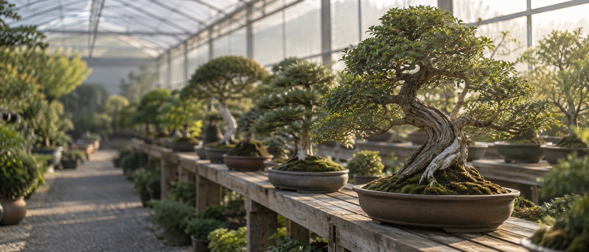
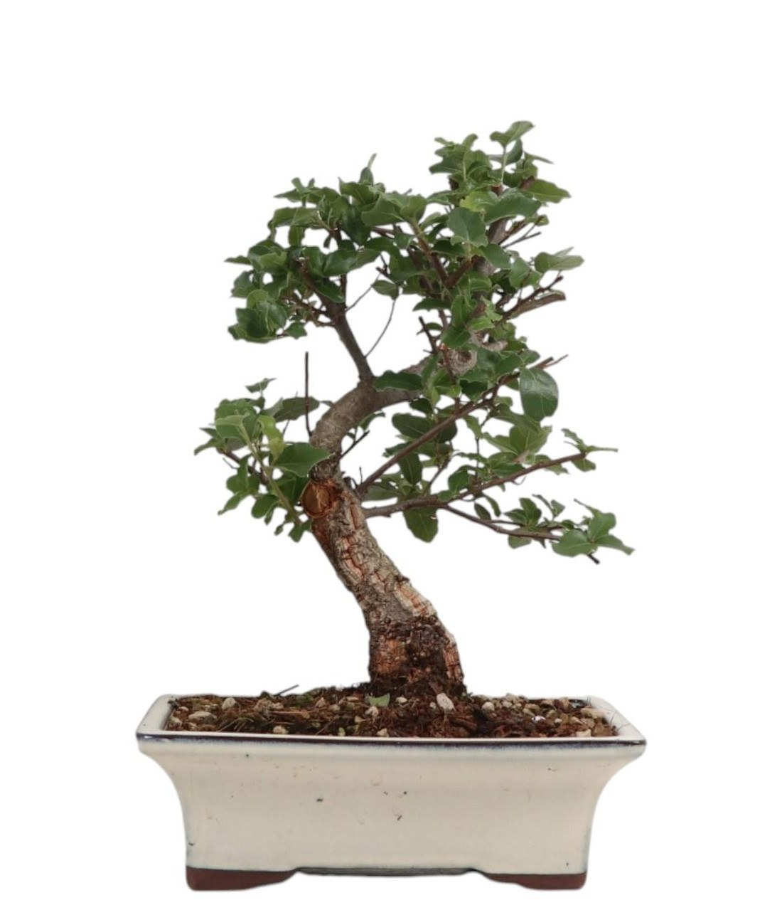

eBook grátis
Segredos
para cuidar
do Bonsai

Os cinco cuidados
que decidem tudo
Onde o colocar
Rega
Adubo
Poda
Transplante
+10%
na primeira compra online,
com o eBook grátis.
com o eBook grátis.


Peça o eBook
grátis
luso-bonsai.com